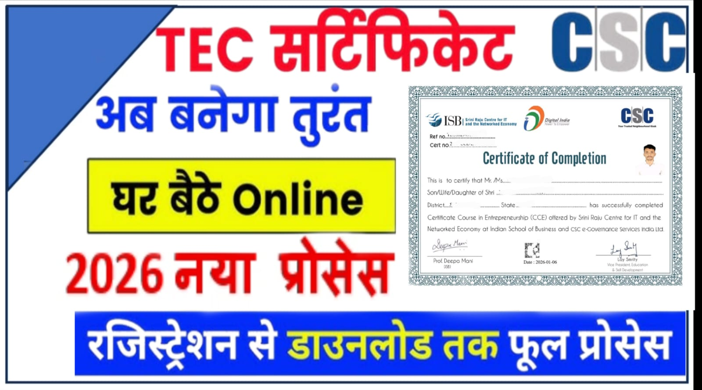

TEC Certificate Registration 2026 – CSC ID लेने के लिए पूरी जानकारी
📝 TEC Certificate Registration 2026 – Registration से लेकर Certificate पाने तक पूरा प्रोसेस

अगर आप CSC (Common Service Center) लेना चाहते हैं, तो TEC Certificate (Telecentre Entrepreneur Course) आपके लिए बहुत जरूरी है। बिना TEC Certificate के आप CSC ID के लिए आवेदन नहीं कर सकते। इस लेख में हम आपको TEC Registration से लेकर Certificate मिलने तक का पूरा प्रोसेस आसान भाषा में बताएंगे।
🔹 TEC Certificate क्या है?
TEC का पूरा नाम Telecentre Entrepreneur Course है। यह एक ऑनलाइन कोर्स है जिसे CSC Academy द्वारा चलाया जाता है। इस कोर्स का मुख्य उद्देश्य लोगों को डिजिटल सेवाओं और CSC कार्य के बारे में जानकारी देना है।
👉 इस कोर्स को पूरा करने के बाद आपको एक TEC Certificate मिलता है, जो CSC Registration के लिए अनिवार्य
🔹 TEC Certificate के फायदे
- CSC ID के लिए जरूरी
- Digital Knowledge बढ़ता है
- Online Services सीख सकते हैं
- Income का अच्छा Source बन सकता है
🔹 TEC Registration 2026 कैसे करें?
TEC Registration करने के लिए नीचे दिए गए स्टेप्स फॉलो करें:
- सबसे पहले CSC Academy की Official Website खोलें
- Register बटन पर क्लिक करें
- अपना नाम
- मोबाइल नंबर
- ईमेल
- पिता का नाम
- Date of birth
- पता
- एक पासपोर्ट साइज फोटो(Upload करे)
- OTP verification करें
- Payment करें (लगभग ₹1479)
- Payment के बाद आपको Login ID और Password मिल जाएगा
💻 TEC Course कैसे करें?
👉 Login करने के बाद आपको TEC का dashboard दिखेगा
इसमें क्या होता है:
- 10 Assessment Module
- हर module में कुछ सवाल होते हैं
- सभी modules को पास करना जरूरी होता है
✅ कैसे पास करें:
- हर module ध्यान से पढ़ें
- सही उत्तर चुनें
- अगर fail हो जाते हैं तो दुबारा दे सकते हैं
👉 सभी modules pass करने के बाद आप final exam के लिए eligible हो जाते हैं।
🧾 Final Exam Process
👉 सभी module पास करने के बाद आपको Final Exam देना होता है
Exam Details:
- Online होता है
- Multiple choice questions होते हैं
- Passing marks जरूरी होता है
👉 अगर आप exam पास कर लेते हैं तो आपको TEC Certificate मिल जाता है।
🎓 TEC Certificate कैसे डाउनलोड करें?
👉 Exam पास करने के बाद:
- TEC Portal में login करें
- Certificate section में जाएं
- Download Certificate पर क्लिक करें
👉 अब आपका TEC Certificate PDF में डाउनलोड हो जाएगा।
📌 TEC Certificate क्यों जरूरी है?
👉 CSC ID लेने के लिए TEC Certificate अनिवार्य है
इसके फायदे:
- CSC Registration कर सकते हैं
- Digital services provide कर सकते हैं
- Online work से income generate कर सकते हैं
- Government schemes में काम कर सकते हैं
⚠️ जरूरी बातें (Important Tips)
- Registration करते समय सही जानकारी भरें
- Email और Password सुरक्षित रखें
- Exam को ध्यान से दें
- Official website से ही apply करें
| TEC Certificate | Registration |
|---|---|
| TEC Certificate | login |
| Official Website | Click here |
| Facebook Page | WhatsApp Channel |
📝 निष्कर्ष (Conclusion)
TEC Certificate 2026 उन सभी लोगों के लिए एक महत्वपूर्ण कोर्स है जो CSC ID लेकर डिजिटल सेवाओं के क्षेत्र में काम करना चाहते हैं। यह न केवल आपको सरकारी सेवाओं को समझने में मदद करता है, बल्कि आपको ऑनलाइन कार्य करने का सही ज्ञान भी देता है।
इस कोर्स को पूरा करने के बाद आप आसानी से CSC के माध्यम से विभिन्न सेवाएं प्रदान कर सकते हैं और अपनी आय बढ़ा सकते हैं। इसलिए यदि आप एक सफल डिजिटल सेवा प्रदाता बनना चाहते हैं, तो TEC Certificate करना आपके लिए एक बेहतरीन और जरूरी कदम है। 🚀
❓ Frequently Asked Questions (FAQ)
TEC Certificate क्या है?
👉 TEC (Telecentre Entrepreneur Course) एक डिजिटल कोर्स है जो CSC ID लेने के लिए अनिवार्य होता है।
TEC Certificate किसके लिए जरूरी है?
👉 जो लोग CSC ID लेना चाहते हैं या डिजिटल सेवा केंद्र खोलना चाहते हैं, उनके लिए यह जरूरी है।
TEC Registration कैसे करें?
👉 CSC Academy की official वेबसाइट पर जाकर registration करें, basic जानकारी भरें और फीस जमा करें।
TEC Registration fee कितनी होती है?
👉 लगभग ₹1479 (समय के अनुसार बदल सकती है)।
TEC Exam कैसे होता है?
👉 यह एक ऑनलाइन परीक्षा होती है जिसमें multiple choice questions (MCQ) पूछे जाते हैं।
TEC Certificate कब मिलता है?
👉 सभी modules और final exam पास करने के बाद certificate मिल जाता है।
TEC Certificate कैसे डाउनलोड करें?
👉 TEC portal में login करके certificate section से डाउनलोड कर सकते हैं।
क्या बिना TEC के CSC ID मिल सकता है?
👉 नहीं, CSC ID लेने के लिए TEC Certificate जरूरी है।